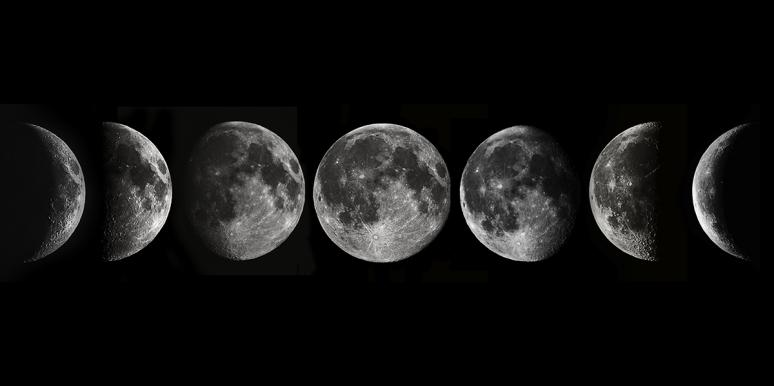

THE MOON
Let's learn a little bit about the moon ☽
The Moon is Earth's only natural satellite and the fifth largest moon in the solar system. The Moon's presence helps stabilize our planet's wobble and moderate our climate. The Moon's distance from Earth is about 240,000 miles (385,000km). The Moon has a very thin atmosphere called an exosphere
We see the Moon’s disk change from all dark to all light to all dark again:
This span of time is called a lunar cycle, lunation, lunar month, or synodic month.
The length of the cycle can vary slightly, but on average, it is 29.53059 days.
(See “What’s the Moon’s Age?” below for more information.)
Astronomers have broken down this cycle into four primary Moon phases: New Moon,
First Quarter, Full Moon, and Last Quarter.
There are also four secondary phases:
Waxing Crescent, Waxing Gibbous, Waning Gibbous, and Waning Crescent.
The primary
phases occur at a specific moment, no matter where you are on Earth, which is then
converted to local time.
(Depending on where you live, you may or may not be able
to see the exact moment of a phase, in part because the Moon may not have risen yet in
your area.). The secondary phases, however, represent a span of time rather than a
specific moment.